Dự án: Phân tích tình hình kinh doanh của cửa hàng trà
1. Data Modeling

- 👤 Khách hàng (Customer & Segment): Quản lý định danh và phân khúc người mua.
- 📦 Sản phẩm (Product & Category): Tổ chức danh mục và chi tiết hàng hóa.
- 🛒 Giao dịch (Bill & Bill_Line): Lưu vết dòng chảy đơn hàng và chi tiết từng mặt hàng.
2. Data Querying
Phân tích chuyên sâu trên Google Colab
Viết các truy vấn SQL chuyên sâu để tạo ra các Data Marts phức tạp, chuẩn bị dữ liệu đầu vào cho hệ thống Dashboard.
Xem chi tiết trên Google Colab%%sql
with t1 as (
select case
when strftime('%m',time_created) < 10 then "T0" || strftime('%m',time_created)
else "T" || strftime('%m',time_created)
end as thang,
count(distinct(bill_id)) as tong_don
from bill
group by thang
),
t2 as (
select case
when strftime('%m',time_created) < 10 then "T0" || strftime('%m',time_created)
else "T" || strftime('%m',time_created)
end as thang,
category_code ,
category_name ,
round(count(distinct(bill.bill_id)) *100.00 / t1.tong_don,1) || '%' as xac_suat
from category
inner join product on category.category_id = product.category_id
inner join bill_line on product.product_id = bill_line.product_id
inner join bill on bill_line.bill_id = bill.bill_id
inner join t1 on t1.thang = case
when strftime('%m',bill.time_created) < 10 then "T0" || strftime('%m',bill.time_created)
else "T" || strftime('%m',bill.time_created)
end
group by case
when strftime('%m',time_created) < 10 then "T0" || strftime('%m',time_created)
else "T" || strftime('%m',time_created)
end,
category_code,
category_name
order by thang
)
select thang,
max(case when category_code = 'BOT' then xac_suat end) as `[BOT] Bột`,
max(case when category_code = 'SET' then xac_suat end) as `[SET] Set Trà`,
max(case when category_code = 'THO' then xac_suat end) as `[THO] Trà hoa`,
max(case when category_code = 'TMX' then xac_suat end) as `[TMX] Trà Mix`,
max(case when category_code = 'TTC' then xac_suat end) as `[TTC] Trà củ, quả sấy`
from t2
group by thang
order by thang
Khách hàng ra quyết định mua chủ yếu dựa trên công năng sức khỏe tức thì (giảm cân, làm đẹp, giải cảm) và hương vị an toàn, quen thuộc (gừng, cúc trắng). Ngược lại, họ có xu hướng từ chối rủi ro với các sản phẩm có hương vị quá nồng (sả, quế) hoặc định vị cao cấp.
• Tối ưu tồn kho & Marketing: Đẩy mạnh ngân sách vào nhóm sản phẩm chức năng (Health-driven: Trà gừng, Dưỡng nhan, Bột cần tây).
• Chiến lược xả hàng (Cross-sell): Chuyển các mặt hàng khó bán lẻ (Cam lát, nụ hoa hồng Tây Tạng) thành hàng tặng kèm (bundle) trong các set trà bán chạy để tăng giá trị đơn hàng (AOV) và giải phóng tồn kho.
Theo dõi chỉ số nhanh trên Google Sheets
Ứng dụng hàm QUERY để bóc tách, gom nhóm và xoay chiều dữ liệu trực tiếp, phục vụ theo dõi nhanh các chỉ số.
Xem File Google Sheets
Thực trạng dữ liệu: Ba nhóm hàng Trà mix (54.5%), Trà hoa (54.4%), và Trà củ, quả sấy (53.2%) dẫn đầu xác suất bán và bám sát nhau ở mức cao (có mặt trong hơn một nửa số đơn hàng). Ngược lại, Set trà chạm đáy với xác suất bán thấp nhất (chỉ 23.8%).
Phân tích hành vi: Khách hàng thể hiện sự ưu tiên rõ rệt cho tính tiện lợi (các loại trà mix sẵn) và sự linh hoạt khi mua lẻ các vị nguyên bản (hoa, củ sấy) để tự do thưởng thức. Các "Set trà" đóng gói sẵn khó bán hơn, rào cản lớn nhất có thể đến từ việc khách hàng không thích một số vị bị cố định trong set, hoặc giá trị trung bình (ticket size) của set cao hơn mua lẻ, tạo tâm lý e ngại.
• Tập trung Hero Products: Đẩy mạnh truyền thông cho "Trà mix" và "Trà hoa" làm sản phẩm phễu (thu hút khách hàng mới).
• Tái cấu trúc nhóm "Set trà": Thay vì bán các set cố định, nên cho phép khách hàng tự "custom" (tự chọn vị mix vào set) hoặc tái định vị "Set trà" thành dòng sản phẩm chuyên biệt cho quà tặng lễ, Tết.
3. Data Cleaning Pipeline
4. Data Pipeline & Cloud Architecture (GCP)
Google Cloud Storage (Lưu trữ dữ liệu thô) ➔ Google Cloud Run (Lập lịch & Xử lý tự động) ➔ BigQuery (Data Warehouse) ➔ Looker Studio (Trực quan hóa báo cáo).
4. Data Visualization & Analysis
Trực quan hóa đa nền tảng: Thiết kế Dashboard động trên Tableau, Power BI và Looker Studio.
Xem Hồ sơ Tableau PublicStreamlit Interactive Dashboard: Ứng dụng Python Streamlit tạo Dashboard và deploy lên cloud. Hệ thống kết nối và đọc dữ liệu real-time từ Google Sheets để hiển thị biểu đồ trực quan. Tích hợp tính năng tương tác hai chiều đặc biệt: cho phép người dùng trực tiếp ghi chú (insight) ngay tại mỗi biểu đồ trên giao diện web và lưu dữ liệu ghi chú đó ngược lại vào Google Sheets.
Xem Streamlit AppBáo cáo phân tích danh mục sản phẩm (Tableau):
Hệ thống Dashboard tương tác đa luồng, phục vụ 3 cấp độ quản trị (Cửa hàng - Nhóm hàng - Mặt hàng).
• Toàn cảnh 2022: Doanh thu 4.77 tỷ VNĐ | 31.438 Đơn hàng.
• Insight (Hành vi): Khách hàng mua sắm nhiều nhất vào giờ nghỉ (12h-13h) và buổi tối (18h-22h). Lượng đơn hàng đạt đỉnh vào Thứ 6, Thứ 7.
• Action (Vận hành & Quảng cáo): Dịch chuyển lịch sản xuất và nhập hàng vào Tháng 7 để chuẩn bị cho mùa cao điểm cuối năm. Tung các chương trình khuyến mãi sớm vào Thứ 4, Thứ 5 để thu hút sự chú ý, sau đó tập trung ngân sách quảng cáo vào cuối tuần để tối đa hóa số lượng đơn hàng.
• Hiệu suất: Nhóm hàng chủ lực chiếm 40% doanh thu (1.87 tỷ VNĐ). Tỷ lệ khách hàng quay lại mua tiếp (Retention Rate) rất tốt: 38.6%.
• Insight (Thời vụ): Ngoại trừ dịp Trung Thu, nhóm hàng đang bỏ lỡ sức mua lớn từ các dịp Lễ/Tết (Vu Lan, Quốc khánh, Tết Nguyên Đán). Doanh thu trong các giai đoạn này không có sự tăng trưởng.
• Action (Chiến lược): Tái cấu trúc nhóm "Set trà" khó bán. Thay vì bán các vị cố định, hãy thiết kế các Bộ Quà Tặng Lễ/Tết (Customized Box) cao cấp để kích thích nhu cầu mua biếu tặng và tăng giá trị trung bình trên mỗi đơn hàng.
• Hiệu suất: Là mặt hàng dễ bán và tiếp cận được nhiều khách hàng nhất (421 Triệu VNĐ), nhưng tỷ lệ khách mua lại cực kỳ thấp (13%).
• Insight (Phân cực): Bột cần tây thành công nhờ đáp ứng đúng nhu cầu thanh lọc cơ thể, tiện lợi của khách hàng nữ. Ngược lại, Trà gạo lứt 8 vị ế ẩm do hương vị thực dưỡng kén người dùng và quy cách đóng gói quá lớn (10 gói/set).
• Action (Sản phẩm): Tách lẻ các mặt hàng khó bán (trà gạo lứt, cam lát) để làm quà tặng kèm khi mua các sản phẩm bán chạy (như trà hoa cúc). Tăng cường tiếp thị qua các chuyên gia/KOLs để tăng độ tin cậy, tương tự như chiến lược đã thành công với Bột cần tây.